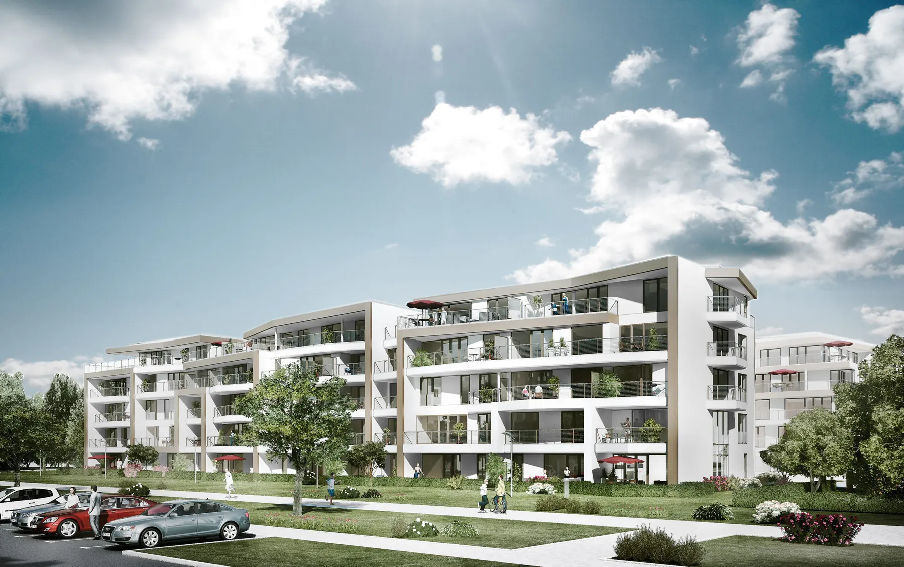
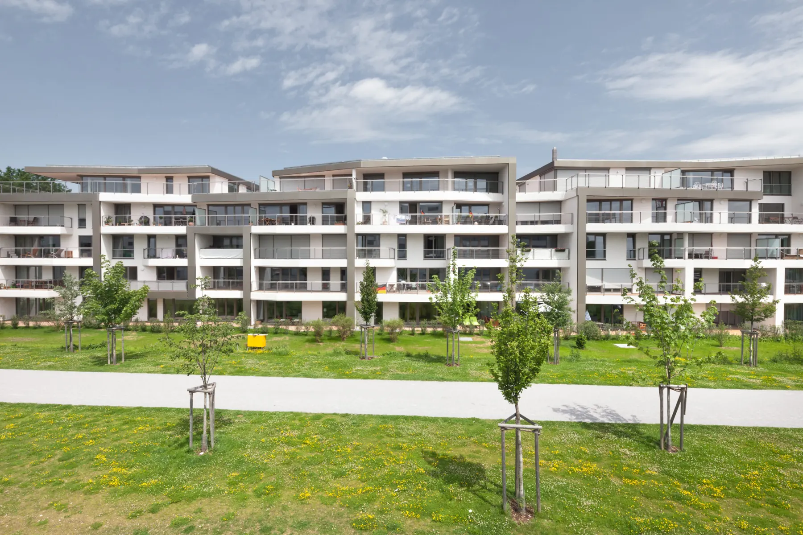
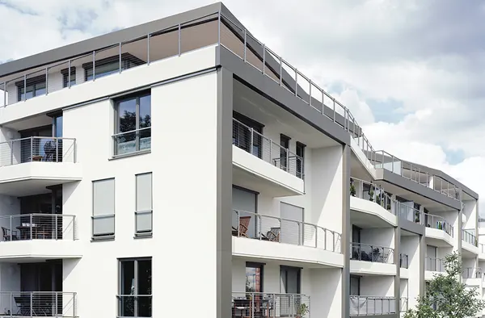

Erschaffung eines gestalterisch einzigartigen Wohngebäudes mit größtmöglicher Individualität für die Bewohner
Hirschparkterrassen, München
Erschaffung eines gestalterisch einzigartigen Wohngebäudes mit größtmöglicher Individualität für die Bewohner
Im Süden des ehemaligen königlichen Hirschgartens im Münchener Westen (Neuhausen) enstand ein neues Wohngebiet mit drei Bauteilen. Auf 13800 Quadratmetern Geschossfläche wurde insgesamt 104 Eigentumswohnungen gebaut. Zu dem Neubau-Objekt gehören auch attraktive Maisonettewohnungen und eine Haus-im-Haus-Lösung. Der Entwurf der Architekten überzeugte durch die markante mäandernde Fassadengestaltung, überwiegend große Fenster, die den Wohnbereich in die umgebende Parklandschaft öffnen, sowie die dynamisch geschnittenen Terrassen und Balkone, die nicht nur optische Akzente setzen, sondern auch den Innenraum Konsequent nach außen fortsetzen und dem Gebäude eine eigene Identität geben. Hier gleicht kein Grundriss den anderen. Hierbei ist es gelungen nicht nur ästetische Ansprüche zu realisieren sondern auch ein Konzept zu entwickeln, das gleichzeitig eine effiziente Bauweise und eine attraktive Rendite für Bauträger und Inestoren garantiert.
Innovatives Wohnprojekt in München: Natur als Inspiration für einzigartiges Wohnkonzept
Mit dieser Anlage hat München eine besondere Wohnanlage bekommen – und das in jeder Hinsicht. Die Wohnanlage wird den Wünschen und Bedürfnissen der BauherrInnen, der EigentümerInnen und der Gesellschaft gerecht. Zur Kunst des guten Bauens gehört die Innovation. Um beim Bauen innovativ zu sein, braucht es Wissen, Kompetenz, Leidenschaft und Erinnerung. Wer in der Nähe eines Gartens baut, muss sich an die Arbeitsweise der Natur erinnern. Sie war bei unserer Konzeptfindung mit BRÜCKNER ARCHITEKTEN eine große Inspirationsquelle. Die Natur arbeitet effizient und nachhaltig, sie setzt auf Diversität, arbeitet mit lokaler Kompetenz, macht aus Form und Funktion eine Einheit und geht an die maximale Entfaltung der vorhandenen Potenziale heran. All das spiegelt sich in der Wohnanlage.
Competition
Arbeiten in bayerischer Alpenidylle
Completed

104 einzigartige Wohnungen für Glück und Geborgenheit"
Wer für Menschen baut, muss sich erinnern an ihre Sehnsucht nach Wohlsein und Glück. Glück entsteht aus Geborgenheit und aus der Berücksichtigung dessen, was sich ein Individuum wünscht. Das Ergebnis dieses Erinnerns sind 104 individuelle Wohnungen mit unterschiedlichen Grundrissen, mit Freiflächen, Balkonen und Dachterrassen von verschiedener Größe und Ausrichtung. Maisonette-Wohnungen und „ein Haus im Haus“ ergänzen die vielfältigen Wohnungstypen. Jede Wohnung ist einzigartig, damit einzigartige Menschen wählen können, viele Optionen haben, das für sie Stimmige und Passende zu finden.
Hirschparkterrassen-Projekt: Brückner Architekten steigern Wohnflächennutzung auf 89,7%
Die Wirtschaftlichkeit der Planung von Brückner Architekten kommt zum Ausdruck in einer Zahl, die im Wohnungsbau Seltenheitswert hat: 89,7 %. Es ist gelungen das Verhältnis zwischen oberirdischer Geschossfläche und der erzielten Wohnfläche des Projektes „Hirschparkterrassen“ auf den Prozentsatz von 89,7 % zu heben. Im Normalfall liegt dieser Wert nur zwischen 82 und 85 %. Von diesem Mehrwert profitieren Investoren, Bauträger und Eigentümer gleichermaßen.

Besonderheit Erschaffung eines gestalterisch einzigartigen Wohngebäude mit größtmöglicher Individualität für die Bewohner
Wir haben ihr Interesse geweckt? Sie haben Fragen oder wollen einen Termin mit uns vereinbaren? Dann hinterlassen Sie uns bitte eine Nachricht.
Wenn Sie uns eine Nachricht per Kontaktformular senden, so erheben, speichern und verarbeiten wir Ihre Daten nur, soweit dies für die Abwicklung Ihrer Anfragen und für die Korrespondenz mit Ihnen erforderlich ist. Hier finden Sie unsere Datenschutzerklärung.
Hinweis: Leider können wir aufgrund aktueller betrieblicher Umstände derzeit keine Schülerpraktika anbieten. Wir hoffen auf Ihr Verständnis und stehen für zukünftige Möglichkeiten gerne zur Verfügung. Vielen Dank.
Brückner Architekten GmbH Gabriel-Max-Straße 4 81545 München
BRÜCKNERINNEN Interior
REON Realisierung
PROPERTYMAX Maximales Baurecht
TGA Süddeutschland GmbH
Rendeffect GmbH
Wir haben IhrInteresse geweckt?
Sie haben Fragen oder wollen einen Termin vereinbaren?